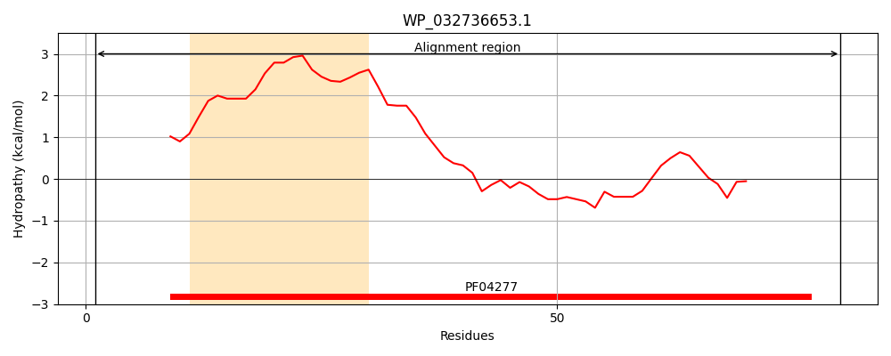
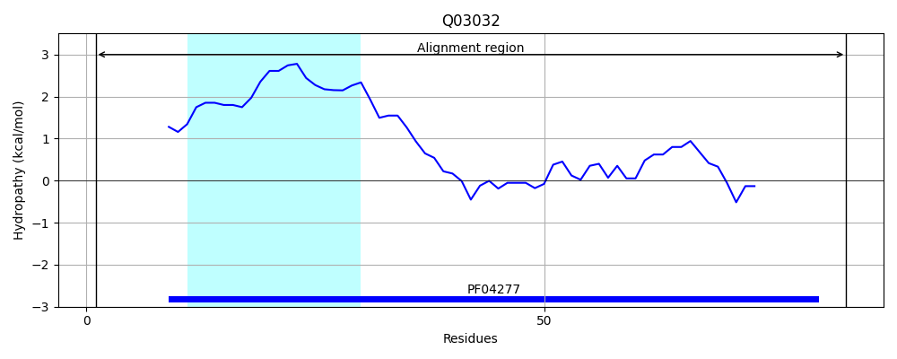
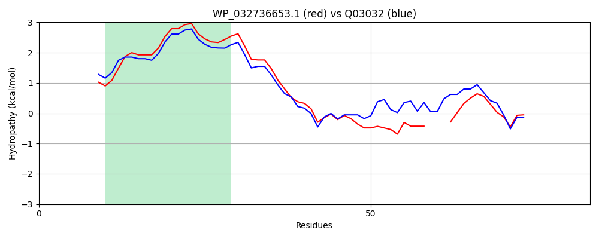

Hit Accession: Q03032
Hit TCID: 3.B.1.1.1
Hit Description: gnl|BL_ORD_ID|12102 gnl|TC-DB|Q03032|3.B.1.1.1 OXALOACETATE DECARBOXYLASE GAMMA CHAIN (EC 4.1.1.3) - Salmonella typhimurium.
Mach Len: 83
e:0.000000
Query TMS Count : 1
Hit TMS Count: 1
TMS-Overlap Score: 1.000000
Predicted Substrates:CHEBI:9175;sodium(1+)
BLAST Alignment:
| Protein Hydropathy Plots: | |
|---|---|
|  |  |
Pairwise Alignment-Hydropathy Plot: | |
|  | |